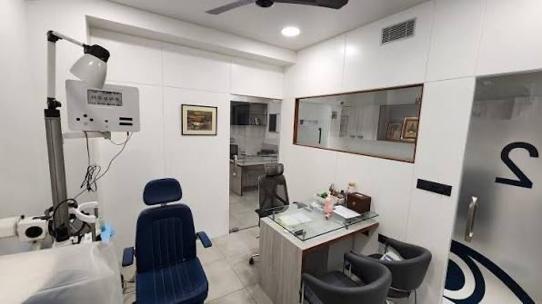

Vitreoretinal care
Care for the retina and the jelly-like filling of the eye. This is Dr. Kamat's surgical specialty.
Eye clinic in Bijai, Mangalore
Dr. Sreepati Kamat · Ophthalmology and Vitreoretinal Surgery
29 years of experience
Monday to Saturday, 8:30 am to 6:30 pm
Eye care at Onyx Eye Clinic. To ask about any of them, see Book a visit.
Care for the retina and the jelly-like filling of the eye. This is Dr. Kamat's surgical specialty.
A consultation for a clouded lens, and a talk about surgery if it is needed.
Eye examinations for people who have diabetes, including a look at the retina.
Checking eye pressure and the optic nerve, for people at risk or already diagnosed.
A consultation for problems on the surface of the eye, such as irritation, injury or infection.
Assessment for eyes that do not point the same way, in children and in adults.
Eye examinations and a consultation for babies, children and teenagers.
A consultation about the eyelids, the tear ducts and the area around the eye.
Assessment for short sight, when faraway things look blurred, and a talk about the options.
A consultation for anyone whose sight is getting worse or has changed.
Sight testing and spectacle prescriptions with the clinic's optometrist.
To confirm: Optometrist's nameBlue, green, hazel, brown, grey and more.
Dr. Sreepati Kamat, ophthalmology and vitreoretinal surgery, 29 years.
Vitreoretinal care, cataract, glaucoma, cornea, children's eyes and more.
Patients from Dakshina Kannada, Kasaragod and South Kerala.
Book by call, WhatsApp, online form or calendar. Monday to Saturday, 8:30 am to 6:30 pm.
Ophthalmology and Vitreoretinal Surgery
29 years of experience
Dr. Sreepati Kamat
Dr. Sreepati Kamat is an eye doctor in Ophthalmology and Vitreoretinal Surgery, with 29 years of experience. Dr. Kamat sees patients at Onyx Eye Clinic in Bijai, Mangalore.
Four ways to book, Monday to Saturday, 8:30 am to 6:30 pm. This preview page never sends or books anything: the buttons only open WhatsApp with a message ready, and you press send yourself.
Choose a message. WhatsApp opens with it ready to send.
Hello, I'd like to book an appointment with Dr. Kamat.
This only opens WhatsApp with the message ready. You choose the chat and press send yourself.
The clinic's phone number will be shown here once it is confirmed.
Preview only: nothing is sent
Preview only: nothing is booked
Time: between 8:30 am and 6:30 pm, the clinic's opening hours
I'd like to book on Monday, between 8:30 am and 6:30 pm.
Nothing is booked from this page. WhatsApp opens with the message ready, and you press send yourself.
